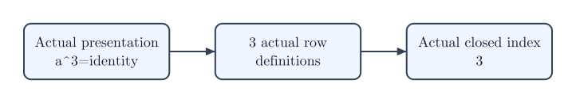
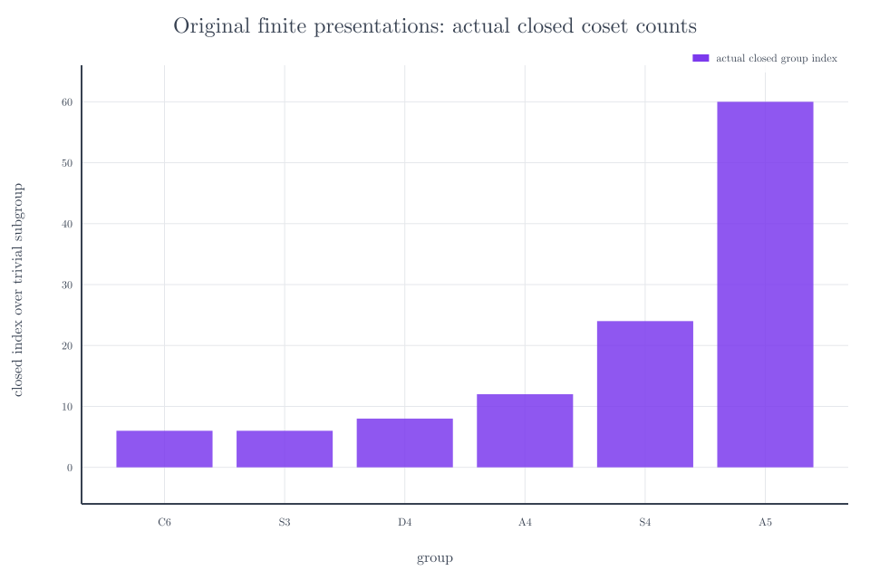
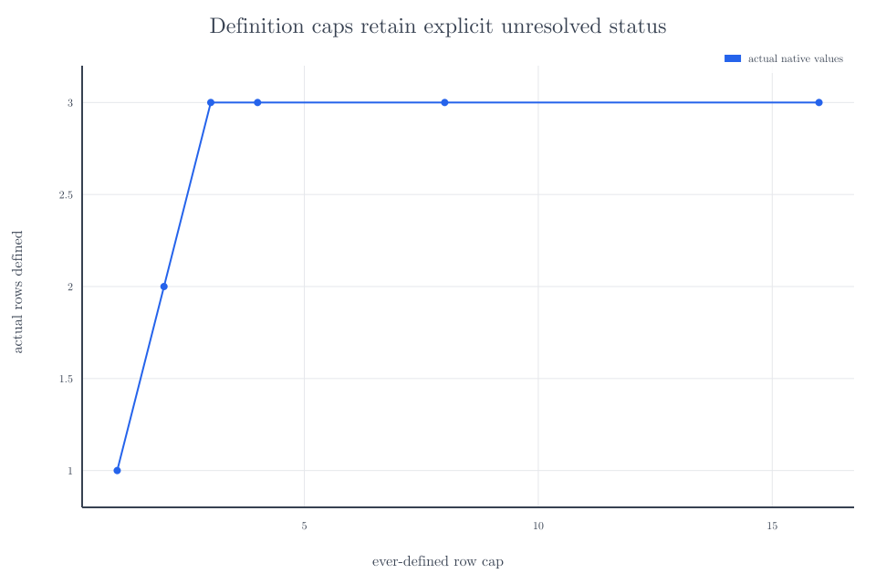
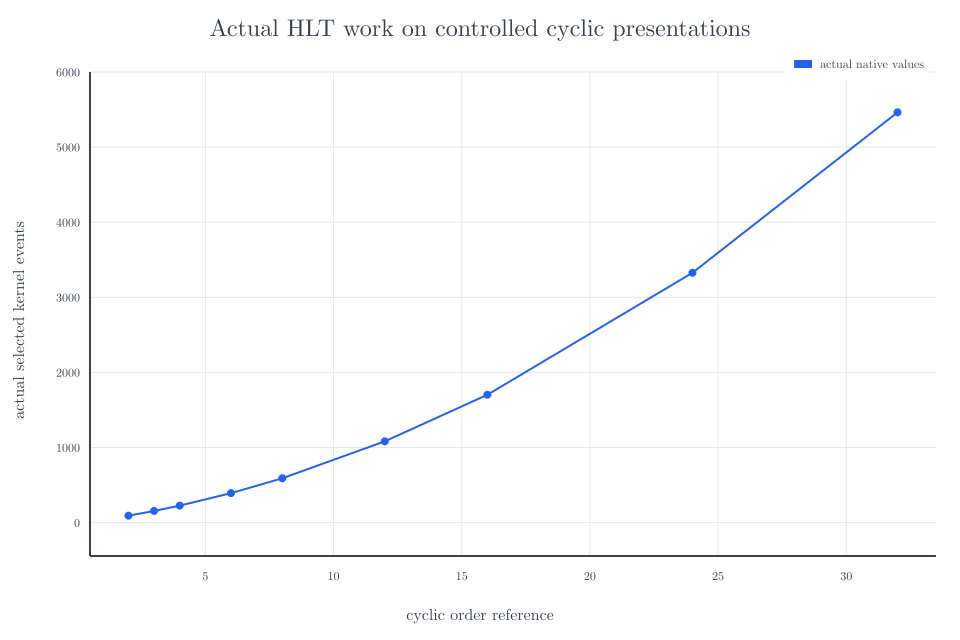

Todd-Coxeter: actual coset definitions, coincidences and closure
Abstract
Coset enumeration builds a generator action from a group presentation and subgroup constraints. Actual definitions, scan deductions and coincidence merges retain the original cyclic, dihedral and triangle-group examples while making unresolved resource limits explicit.
Mechanism and mathematical scope
Each table row is a coset and paired columns are a generator and inverse. Scan a relator forward and backward from one row: an isolated gap determines a link, a larger gap defines a row, and incompatible endpoints imply a coincidence. Merge the coincidence congruence iteratively across every generator direction. Subgroup words fix row0. Repeated complete scan/fill passes continue until no actual links, definitions or merges change and every surviving row is complete. No general polynomial bound or successful-termination guarantee exists; a resource-limited index-1 is unresolved and does not prove infinite order/index.
A tiny actual producing history
The table and native concept diagram read the same producing execution. Every block below is a complete editable C++ program.
#include <dm/dm.hpp>
int main() {
namespace a = dm::algorithms;
namespace g = dm::graphics;
std::filesystem::create_directories("build");
auto r = a::todd_coxeter_trace(1, {{1, 1, 1}}, {});
std::print("| actual action | row | other | internal symbol | ever defined | live | actual scanned word " "|\n| --- | ---: | ---: | ---: | ---: | ---: | --- |\n");
for (const auto &s : r.steps)
std::print("| {} | {} | {} | {} | {} | {} | `{}` |\n", s.action,
s.coset, s.other, s.symbol, s.defined, s.live, s.word);
std::print("Closed {}; actual compact action `{}`.\n", r.closed,
r.compact_table);
g::Diagram concept_diagram(48, 1100);
concept_diagram.node("n0", {0, 0}, "Actual presentation a^3=identity");
concept_diagram.node("n1", {5, 0},
std::format("{} actual row definitions", r.definitions));
concept_diagram.node("n2", {10, 0},
std::format("Actual closed index {}", r.index));
concept_diagram.edge("n0", "n1").edge("n1", "n2");
concept_diagram.save_svg("build/todd_coxeter_tiny.svg");
}| actual action | row | other | internal symbol | ever defined | live | actual scanned word |
|---|---|---|---|---|---|---|
| define | 0 | -1 | -1 | 1 | 1 | [] |
| relator | 0 | -1 | -1 | 1 | 1 | [0, 0, 0] |
| define | 1 | -1 | -1 | 2 | 2 | [] |
| link | 0 | 1 | 0 | 2 | 2 | [] |
| define | 2 | -1 | -1 | 3 | 3 | [] |
| link | 1 | 2 | 0 | 3 | 3 | [] |
| link | 2 | 0 | 0 | 3 | 3 | [] |
| relator | 1 | -1 | -1 | 3 | 3 | [0, 0, 0] |
| relator | 2 | -1 | -1 | 3 | 3 | [0, 0, 0] |
| relator | 0 | -1 | -1 | 3 | 3 | [0, 0, 0] |
| relator | 1 | -1 | -1 | 3 | 3 | [0, 0, 0] |
| relator | 2 | -1 | -1 | 3 | 3 | [0, 0, 0] |
Closed true; actual compact action [[1, 2], [2, 0], [0, 1]].

The retained original experiment
#include <dm/dm.hpp>
int main() {
namespace a = dm::algorithms;
namespace g = dm::graphics;
std::filesystem::create_directories("build");
struct G {
std::string name;
int generators;
std::vector<std::vector<int>> relations;
long long expected;
};
const std::vector<G> groups{{"C6", 1, {std::vector<int>(6, 1)}, 6},
{"S3", 2, {{1, 1}, {2, 2, 2}, {1, 2, 1, 2}}, 6},
{"D4", 2, {{1, 1, 1, 1}, {2, 2}, {1, 2, 1, 2}},
8},
{"A4", 2,
{{1, 1}, {2, 2, 2}, {1, 2, 1, 2, 1, 2}}, 12},
{"S4", 2,
{{1, 1}, {2, 2, 2}, {1, 2, 1, 2, 1, 2, 1, 2}},
24},
{"A5", 2,
{{1, 1}, {2, 2, 2},
{1, 2, 1, 2, 1, 2, 1, 2, 1, 2}}, 60}};
std::vector<double> y;
std::vector<std::string> labels;
std::print("| original group | actual closed index | mathematical reference | actual definitions | " "coincidences |\n| --- | ---: | ---: | ---: | ---: |\n");
for (const auto &g : groups) {
auto r = a::todd_coxeter_run(g.generators, g.relations, {});
if (!r.closed)
throw std::runtime_error(r.stop);
labels.push_back(g.name);
y.push_back(r.index);
std::print("| {} | {} | {} | {} | {} |\n", g.name, r.index, g.expected,
r.definitions, r.coincidences);
}
auto subgroup =
a::todd_coxeter_run(1, {std::vector<int>(12, 1)},
{std::vector<int>(4, 1)});
std::print("Original[C12:<a^4>] actual index {}, expected4.\n",
subgroup.index);
auto chart =
g::RPlot::barplot(y, labels, "actual closed group index", {124, 58, 237});
chart.title("Original finite presentations: actual closed coset counts").x_label("group").y_label("closed index over trivial subgroup");
chart.save_svg("build/todd_coxeter_original.svg");
}| original group | actual closed index | mathematical reference | actual definitions | coincidences |
|---|---|---|---|---|
| C6 | 6 | 6 | 6 | 0 |
| S3 | 6 | 6 | 6 | 0 |
| D4 | 8 | 8 | 8 | 0 |
| A4 | 12 | 12 | 14 | 2 |
| S4 | 24 | 24 | 31 | 7 |
| A5 | 60 | 60 | 82 | 22 |
Original[C12:<a^4>] actual index 4, expected4.

Explicit controls
#include <dm/dm.hpp>
int main() {
namespace a = dm::algorithms;
namespace g = dm::graphics;
std::filesystem::create_directories("build");
std::vector<double> x, y;
std::print("| total definition cap | closed | actual stop | actual index | ever defined |\n| ---: | --- " "| --- | ---: | ---: |\n");
for (std::size_t cap : {1, 2, 3, 4, 8, 16}) {
a::ToddOptions o;
o.max_cosets = cap;
auto r = a::todd_coxeter_run(1, {{1, 1, 1}}, {}, o);
x.push_back(cap);
y.push_back(r.definitions);
std::print("| {} | {} | {} | {} | {} |\n", cap, r.closed, r.stop,
r.index, r.definitions);
}
auto plot = g::RPlot::create();
plot.lines(x, y, "actual native values", {37, 99, 235}).points(
x, y, {37, 99, 235}, 4).title("Definition caps retain explicit unresolved status").x_label("ever-defined row cap").y_label("actual rows defined");
plot.save_svg("build/todd_coxeter_controls.svg");
}| total definition cap | closed | actual stop | actual index | ever defined |
|---|---|---|---|---|
| 1 | false | coset limit | -1 | 1 |
| 2 | false | coset limit | -1 | 2 |
| 3 | true | complete | 3 | 3 |
| 4 | true | complete | 3 | 3 |
| 8 | true | complete | 3 | 3 |
| 16 | true | complete | 3 | 3 |

Actual selected work and sensitivity
#include <dm/dm.hpp>
int main() {
namespace a = dm::algorithms;
namespace g = dm::graphics;
std::filesystem::create_directories("build");
std::vector<double> x, y;
std::print("| cyclic order reference | actual closed index | actual word scans | actual symbol " "transitions | selected operations |\n| ---: | ---: | ---: | ---: | ---: |\n");
for (int n : {2, 3, 4, 6, 8, 12, 16, 24, 32}) {
auto r = a::todd_coxeter_run(1, {std::vector<int>(n, 1)}, {});
x.push_back(n);
y.push_back(r.operations);
std::print("| {} | {} | {} | {} | {} |\n", n, r.index, r.word_scans,
r.symbol_visits, r.operations);
}
auto plot = g::RPlot::create();
plot.lines(x, y, "actual native values", {37, 99, 235}).points(
x, y, {37, 99, 235}, 4).title("Actual HLT work on controlled cyclic presentations").x_label("cyclic order reference").y_label("actual selected kernel events");
plot.save_svg("build/todd_coxeter_work.svg");
}| cyclic order reference | actual closed index | actual word scans | actual symbol transitions | selected operations |
|---|---|---|---|---|
| 2 | 2 | 4 | 7 | 93 |
| 3 | 3 | 6 | 17 | 156 |
| 4 | 4 | 8 | 31 | 227 |
| 6 | 6 | 12 | 71 | 393 |
| 8 | 8 | 16 | 127 | 591 |
| 12 | 12 | 24 | 287 | 1083 |
| 16 | 16 | 32 | 511 | 1703 |
| 24 | 24 | 48 | 1151 | 3327 |
| 32 | 32 | 64 | 2047 | 5463 |

API and interpretation
Words use signed1-based generator IDs; zero, invalid IDs and INT_MIN magnitudes outside range reject before table allocation. Total definitions differ from live rows after coincidences. Complete word, actual table and selected-operation policies are separate. Closed compact actions are independently checked against inverse columns and every relation; unresolved partial tables never claim a finite group certificate.
Reusable producers, fixtures and histories live in the canonical C++ library. Captured records own their values and do not come from a separate report replay. Selected counters and record/scalar policies are specified at their API boundaries; they are not peak-byte or wall-time budgets. Synthetic structural inputs are controlled fixtures for these mechanisms.
References
- Todd and Coxeter, A Practical Method for Enumerating Cosets of a Finite Abstract Group, Proceedings of the Edinburgh Mathematical Society5 (1936),26-34
Verified in the shared ten-document batch: 70 scoped native cases;20 directly
instrumented ASan/UBSan cases;75 executable public examples;387/387 definitions
across25 full scopes;10 hovers;9766 independent records/134784 checks;frozen
valid-input comparisons across all ten families;13 checkout/installed standalone
headers and linked ten-family consumer;40 executed programs and40 inspected
figures with both exports. Receipts: build/mepml-conversion/batch-394-403/.